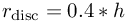

Simulate with complex geometries and complex physics
ORGANIZE_ActivateBNDpoints_Version
define version number for the boundary point activation
First of all, for better understanding of the activation algorithm, see Illustration .
ORGANIZE_ActivateBNDpoints_Version = 2 # invoke the old version
The default value is ORGANIZE_ActivateBNDpoints_Version = 3 (the new version, additional options see FurtherOptions)
Option selection for version 3:
This version, in general, places ghost points at a small distance from free surface points in their normal direction, i.e.
These ghost points are considered as interior points.
- ORGANIZE_ActivateBNDpoints_Version = 30: measure the volume angle spanned by the local tetrahedrization; ignore tetras touching only free surface or boundary points (including the ghost points); deactivate BND-point if volume angle too small.
- ORGANIZE_ActivateBNDpoints_Version = 31: experimental, do not use same as version 30; additionally: boundary point is inactive if the local tetrahedrization forms open faces touching free surface points or their ghosts.
- ORGANIZE_ActivateBNDpoints_Version = 32 (is evenly the default ORGANIZE_ActivateBNDpoints_Version = 3): same as version 30; additionally: ignore any tetra touching some free surface point or its sidewise ghost.
- ORGANIZE_ActivateBNDpoints_Version = 33: activate BND-point, if its local tetrahedrization touches at least one interior point.
- ORGANIZE_ActivateBNDpoints_Version = 34: activate BND-point, if there is a path to some interior point, that does not intersect with a disc spanned bei either free surface of regular wall points; radius of the disc: 
| List of members: | |
|---|---|
| FurtherOptions | define further options for boundary point activation versoin 3 |
| Illustration | illustrate the idea of boundary point activation |